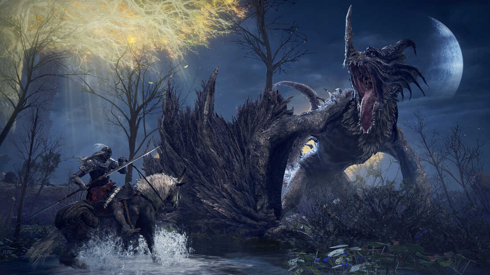

Elden Ring
Järjekordne meistriteos FromSoftware-i ja Hidetaka Miyazaki poolt
Elden ring on FromSoftware poolt loodud RPG, mis pakub mängijale intensiivseid võitlusi ja raskeid väljakutseid. Kui olete eelnevalt mänginud Dark Souls-i või mõnda muud selle sarnast mängu, siis kogemus on sama, aga tegevus toimub avatud maailmas. Juhul kui eelnev kogemus Soulslike-idega puudub, siis Soulslike viitab mängule, kus mängijat ei õpetata eriti ning mängija ülesanne ongi välja mõelda, mida teha ja kuidas teha. Üks oluline aspekt on veel see, et võitlemine on keeruline ning mängu edukaks läbimiseks on vaja õppida mismoodi erinevad vastased ründavad ning kuidas käituda vastavate rünnakute puhul. Kuna vastaste rünnakud on keerulised ja vaenlased on tugevad, siis pidev suremine on mängu osa. Tegemist on RPG-iga nii et mängu läbimiseks on palju erinevaid lähenemisi ja seega võivad kaks mängijat mängu läbi mängida täiesti erinevalt. Varasematest FromSoftware-i Soulslike mängudest eristubElden Ring selle poolest, et mängu lugu on edastatud natukene otsesemalt ja selgemalt.
Elden Ringi läbi mängimisel jäi sellest mulle väga positiivne mulje. Vaatamata sellele, et tegemist on väga suure maailmaga on kogu maailmas mitmekesised vastased ning ükski ala ei tundu tühi olevat. Igal pool on midagi avastada, mõni avastus võib olla küll suht tähtsusetu, aga igav ei hakka. Mängu bossid olid unikaalsed ning mõnda ebaolulisemat minibossi oli mitu korda kasutatud, aga siis oli ka natukene ta rünnakuid muudetud. Elden ringi puhul võib häirida see, et kui eesmärgiks on kõikide suuremate bossidega võitlemine, siis vähemalt kolme juurde jõudmiseks on vaja väga spetsiifilisi asju teha ning ilma õpetuseta on neid bosse pigem võimatu leida. Näiteks ma ei usu, et oma esimesel mängu korral leiab Mohgwyn Palace-i, kus on üks neist bossidest. Samas see ongi Soulslike-ide võlu, et seal on palju avastada ning mänguloojad ei karda üldse luua mängu alasid, kuhu enamus mängijad oma peaga ei jõuagi.